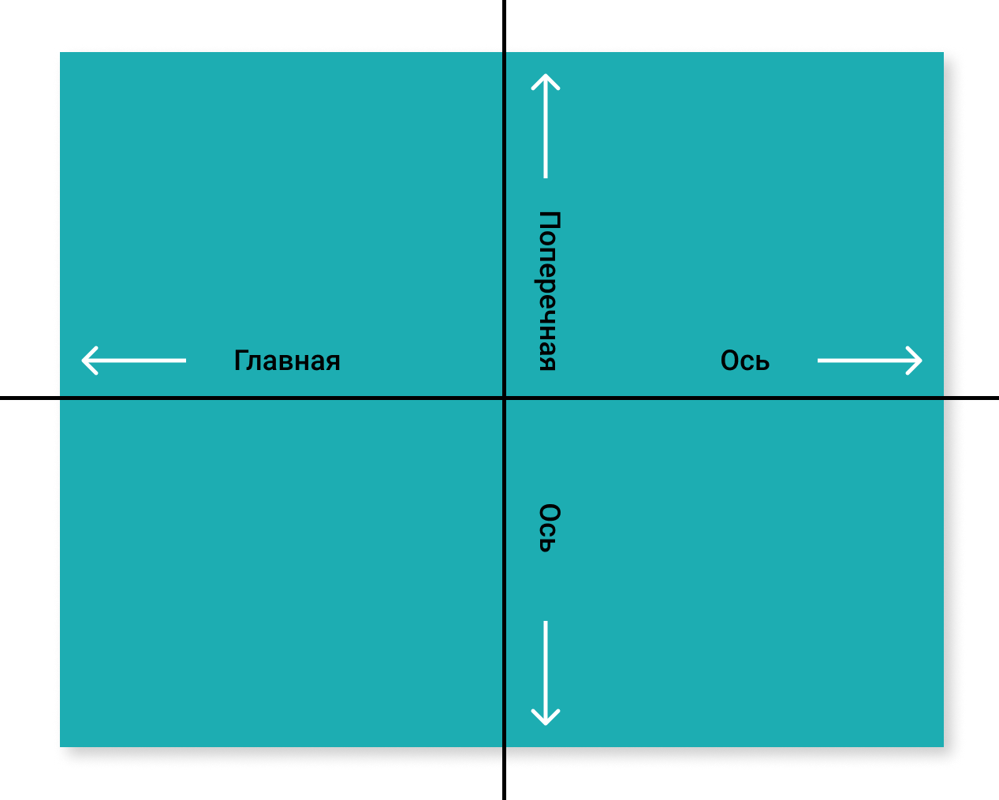

План
- Структура flex контейнера.
- Выравнивание элементов вдоль главной оси.
- Выравнивание элементов вдоль поперечной оси.
- Свойство order.
Flexbox
Элемент, к которому применяется свойство display: flex | inline-flex,
становится flex контейнером, а его потомки - элементами flex контейнера.
Структура flex контейнера

flex-direction
Свойство flex-direction устанавливает направление главной оси
flex-direction: row | row-reverse | column |
column-reverse
flex-wrap
Свойство flex-wrap устанавливает перенос элементов при переполнении контейнера.
flex-wrap: nowrap | wrap | wrap-reverse
flex-flow
Свойство flex-flow объединяет свойства
flex-direction и flex-wrap в одно.
flex-flow: row nowrap | column wrap | column-reverse wrap-reverse
justify-content
Свойство justify-content определяет выравнивание элементов вдоль главной оси.
justify-content: flex-start | flex-end | center | space-between | space-around | space-evenly
align-content
Свойство align-content определяет выравнивание элементов вдоль поперечной оси.
align-content: flex-start | flex-end | center | space-between | space-around | space-evenly
align-items
Свойство align-items как и свойство align-content,
выравнивает элементы вдоль поперечной оси, но в рамках строк, а не контейнера.
align-items: flex-start | flex-end | center | baseline | stretch
align-self
Свойство align-self переопределяет значение свойства align-items
для отдельного элемента (данное свойство устанавливается не родительскому контейнеру, а потомку).
align-self: flex-start | flex-end | center | baseline | stretch
flex-basis
Свойство flex-basis задает базовый размер flex элемента по основной оси.
.flex-item {
flex-basis: 100px;
}
flex-grow
Устанавливает коэффициент роста flex элемента в контейнере и задаёт,
насколько элемент будет увеличиваться по отношению к другим flex элементам.
.flex-item {
flex-grow: 2;
}
flex-shrink
Устанавливает коэффициент сжатия flex элемента в контейнере и задаёт,
насколько элемент будет уменьшаться по отношению к другим flex элементам.
.flex-item {
flex-shrink: 0;
}
flex
Свойство flex объединяет свойства flex-grow
flex-shrink flex-basis.
.flex-item {
flex: 2 0 100px;
}
order
Свойство order определяет (переопределяет) порядок следования flex элементов
внутри flex контейнера.
.flex-item {
order: 2;
}
Вопросы для подготовки к интервью
- Какие есть оси во flex контейнере? Как изменить их направление?
- Что делает свойство justify-content? Какие у него есть значения?
- Как выровнять элементы вдоль поперечной оси? Какие есть для этого свойства и значения?
- Как изменить порядок следования элементов во flex контейнере?
- За что отвечают свойства flex-basis/flex-grow/flex-shrink?